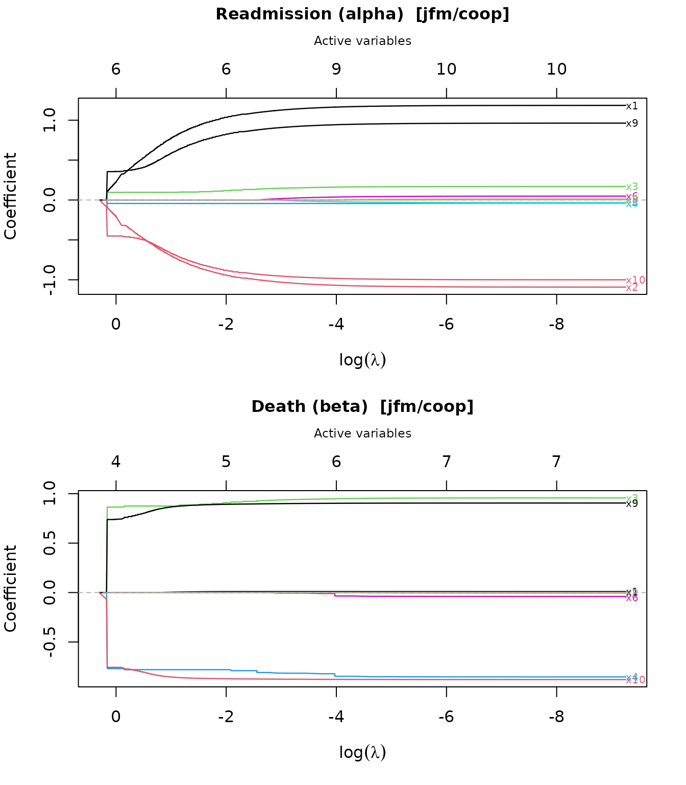
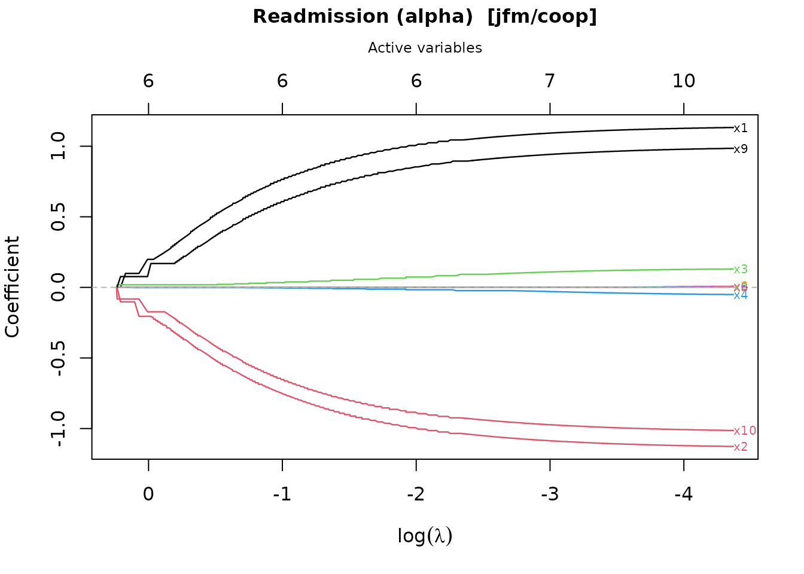
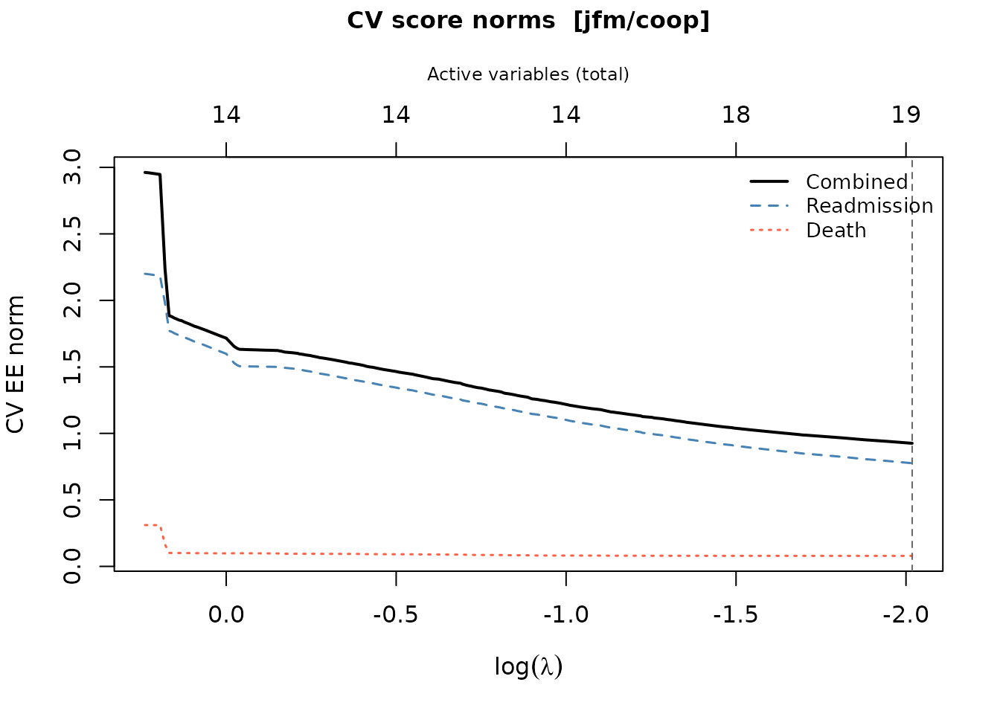
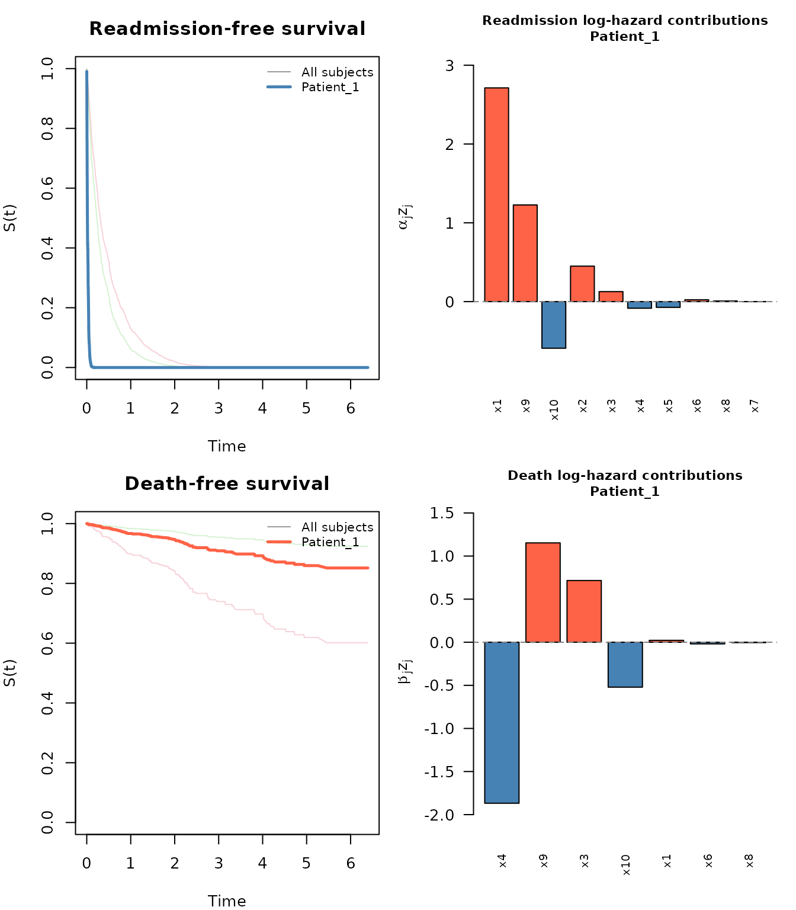
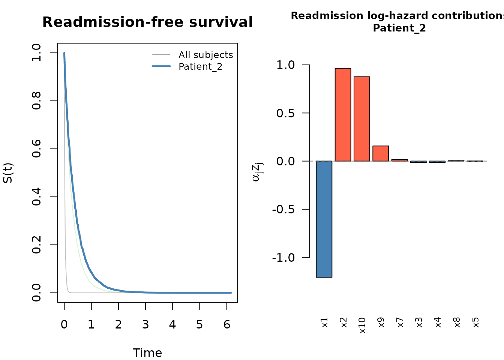
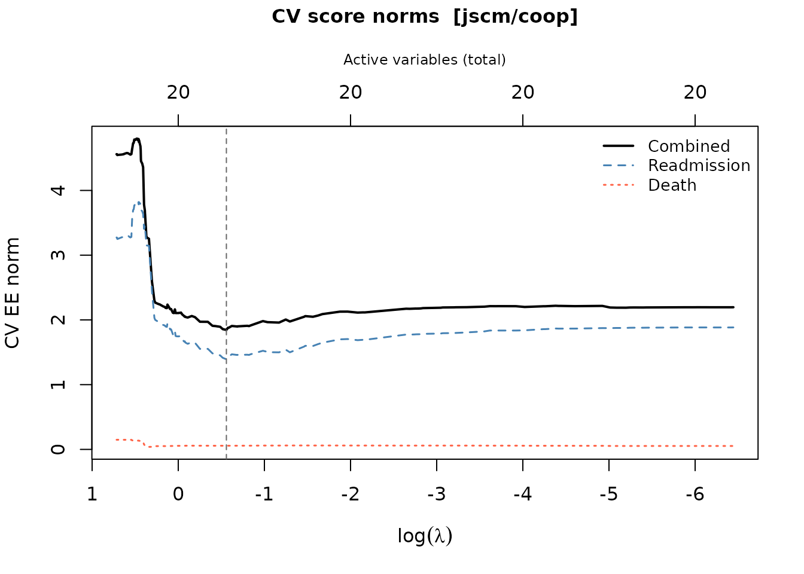
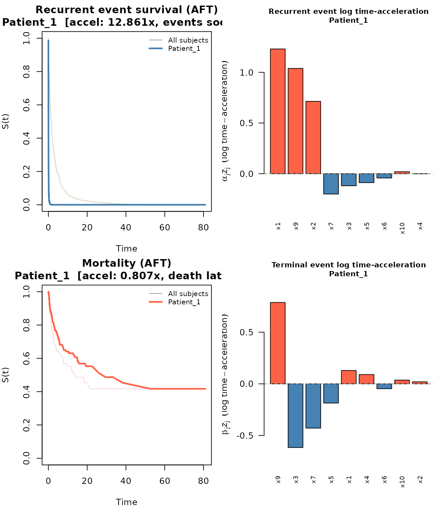
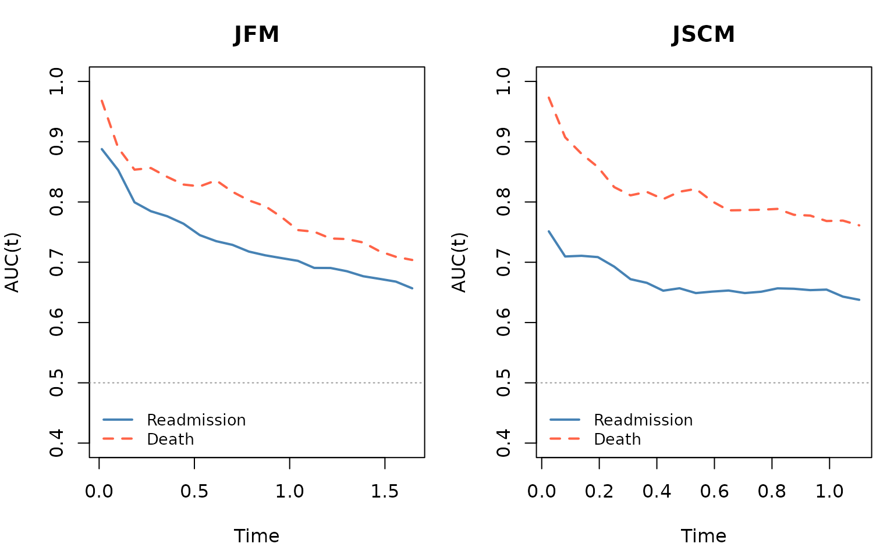

Stagewise Variable Selection for Joint Semi-Competing Risk Models
Lingfeng Huo, Ziren Jiang, Jue Hou, Jared D. Huling
2026-03-20
swjm.RmdOverview
The swjm package implements stagewise variable
selection for joint models of semi-competing risks. In many
medical settings — such as hospital readmission following discharge —
patients can experience a non-terminal recurrent event
(readmission) and a terminal event (death). Death precludes
future readmissions, but readmission does not preclude death, a
structure known as semi-competing risks.
Two joint model frameworks are supported:
| Model | Type | Recurrence process | Terminal process |
|---|---|---|---|
| JFM | Joint Frailty Model (Cox) | Proportional hazards | Proportional hazards |
| JSCM | Joint Scale-Change Model (AFT) | Rank-based estimating equations | Rank-based estimating equations |
Three penalty types are available: cooperative lasso
("coop"), lasso ("lasso"),
and group lasso ("group"). The cooperative
lasso is the recommended default; it encourages predictors that affect
both outcomes to enter together with the same sign.
1. Statistical Background
1.1 Semi-Competing Risks
Let count the readmission events for subject by time , and let denote the time to death. Death censors future readmissions; readmission does not censor death.
Each subject () has:
- A -dimensional covariate vector (possibly time-varying).
- An observed follow-up interval where is the censoring time.
The parameter vector of interest is where governs the recurrence (readmission) process and governs the terminal (death) process.
1.2 Joint Frailty Model (JFM)
The JFM (Kalbfleisch et al., 2013) introduces a subject-specific frailty that links the two processes:
where and are unspecified baseline hazard functions. Marginalising over yields estimating equations that are functions only of and the two baseline hazards.
In the package, alpha is always the
readmission coefficient vector and beta is
always the death coefficient vector.
1.3 Joint Scale-Change Model (JSCM)
The JSCM (Xu et al.) replaces proportional hazards with an AFT-type scale-change specification:
Estimation is based on rank-based estimating equations implemented in C++ via RcppArmadillo.
1.4 Stagewise Variable Selection
The goal is to find a sparse that minimizes a penalized estimating equation criterion. Three penalty structures are supported:
Scaled lasso (independent selection):
Group lasso (simultaneous entry of pairs):
Cooperative lasso (encourages shared sign and support):
The cooperative lasso uses the L2 norm when both coefficients agree in sign (rewarding variables that affect both outcomes in the same direction) and the L-infinity norm when they disagree (applying a harsher penalty).
The stagewise algorithm approximates the penalized solution by taking small gradient steps in the direction determined by the dual norm of the current estimating equation score. At each iteration:
- Compute the EE score (gradient of the unpenalized estimating equation objective).
- Find the active coordinate(s) with the largest penalized dual norm.
- Update by a small step in that direction.
The regularization path is indexed by , recorded as the dual norm at each step. Cross-validation over a grid of values selects the optimal tuning parameter.
1.5 Cross-Validation
cv_stagewise() performs stratified K-fold
cross-validation. For each fold, it evaluates the cross-fitted EE score
norm — the score from the held-out fold evaluated at the coefficient fit
from the remaining folds. The optimal
minimizes the total cross-fitted norm across both sub-models.
2. Installation
# From the package source directory:
devtools::install("swjm")
# Or from a built tarball:
install.packages("swjm_0.1.0.tar.gz", repos = NULL, type = "source")3. Data Format
All functions expect a data frame in counting-process (interval) format with the following required columns:
| Column | Description |
|---|---|
id |
Subject identifier |
t.start |
Interval start time |
t.stop |
Interval end time |
event |
1 = readmission (recurrent event), 0 = death/censoring row |
status |
1 = death, 0 = alive/censored |
x1, …, xp |
Covariate columns |
Each subject contributes multiple rows:
- One row per readmission interval (with
event = 1), followed by - One terminal row (with
event = 0) recording either death (status = 1) or censoring (status = 0).
The covariate values may differ across rows for the same subject (JFM
supports time-varying covariates; JSCM uses the baseline values from the
event = 0 rows).
4. Simulating Data
generate_data() is a unified data-generation interface
for both models.
library(swjm)4.1 Joint Frailty Model data
set.seed(123)
dat_jfm <- generate_data(n = 500, p = 10, scenario = 1, model = "jfm")
Data_jfm <- dat_jfm$data
# Preview
head(Data_jfm[, 1:8])
#> id t.start t.stop event status x1 x2 x3
#> 1 1 0.0000000 2.58167636 0 0 0.8005543 1.1902066 -1.6895557
#> 2 2 0.0000000 3.45105948 1 0 0.4007715 0.1106827 -0.5558411
#> 3 2 3.4510595 6.39295500 1 0 -0.7288912 -0.6250393 -1.6866933
#> 4 2 6.3929550 6.46848377 0 0 0.8215811 0.6886403 0.5539177
#> 5 3 0.0000000 0.04630240 1 0 0.4036315 -0.8864367 -1.3189376
#> 6 3 0.0463024 0.09965756 1 0 1.6858872 -0.2416898 -0.4682005JFM: 500 subjects, 1493 rows, 993 readmissions, 114 deaths
The returned list also contains the true generating coefficients:
True alpha (readmission):
round(dat_jfm$alpha_true, 2)
#> [1] 1.1 -1.1 0.1 -0.1 0.0 0.0 0.0 0.0 1.0 -1.0True beta (death):
round(dat_jfm$beta_true, 2)
#> [1] 0.1 -0.1 1.1 -1.1 0.0 0.0 0.0 0.0 1.0 -1.0Scenario descriptions (for both JFM and JSCM):
| Scenario | Signal structure |
|---|---|
| 1 | Variables affecting readmission only, death only, and both processes |
| 2 | Larger block of shared-sign signals |
| 3 | Mixed-sign signals (some variables have opposite effects on the two outcomes) |
4.2 Joint Scale-Change Model data
set.seed(456)
dat_jscm <- generate_data(n = 500, p = 10, scenario = 1, model = "jscm")
#> Call:
#> reReg::simGSC(n = n, summary = TRUE, para = para, xmat = X, censoring = C,
#> frailty = gamma, tau = 60)
#>
#> Summary:
#> Sample size: 500
#> Number of recurrent event observed: 937
#> Average number of recurrent event per subject: 1.874
#> Proportion of subjects with a terminal event: 0.212
Data_jscm <- dat_jscm$dataJSCM: 500 subjects, 1437 rows, 937 readmissions, 106 deaths
For the JSCM, covariates are drawn from , and a gamma frailty (, ) is used in simulation. Censoring times are .
5. Joint Frailty Model (JFM) Workflow
5.1 Fit the Stagewise Regularization Path
stagewise_fit() traces the full coefficient path as
decreases from a large value (all coefficients zero) to a small value
(many active variables):
fit_jfm <- stagewise_fit(
Data_jfm,
model = "jfm",
penalty = "coop" # cooperative lasso
)
fit_jfm
#> Stagewise path (jfm/coop)
#>
#> Covariates (p): 10
#> Iterations: 5000
#> Lambda range: [9.844e-05, 1.351]
#> Active at final step: 10 readmission, 7 death
#> Readmission (alpha): 1, 2, 3, 4, 5, 6, 7, 8, 9, 10
#> Death (beta): 1, 3, 4, 6, 8, 9, 10The returned swjm_path object contains:
| Component | Description |
|---|---|
alpha |
matrix of readmission coefficients along the path |
beta |
matrix of death coefficients along the path |
theta |
combined matrix (rbind(alpha, beta)) |
lambda |
Dual norm at each step (regularization path index) |
model |
"jfm" or "jscm"
|
penalty |
"coop", "lasso", or
"group"
|
p |
Number of covariates |
5.2 Explore the Regularization Path
p <- 10
k <- ncol(fit_jfm$alpha)
active_final <- which(fit_jfm$alpha[, k] != 0 |
fit_jfm$beta[, k] != 0)- Path length: 5001 steps
- Lambda range: [9.844e-05, 1.351]
- Active variables at final step: 1 2 3 4 5 6 7 8 9 10
Readmission (alpha) coefficients at the final step:
round(fit_jfm$alpha[, k], 4)
#> [1] 1.1860 -1.0916 0.1692 -0.0388 -0.0320 0.0480 0.0025 0.0112 0.9638
#> [10] -1.0099summary() shows a compact table of path-end coefficients
annotated with variable type (shared, readmission-only, or
death-only):
summary(fit_jfm)
#> Stagewise path (jfm/coop)
#>
#> p = 10 | 5000 iterations | lambda: [9.844e-05, 1.351]
#> Decreasing path: 1677 steps
#>
#> Path-end coefficients (nonzero variables):
#>
#> Variable alpha beta Type
#> ---------- ---------- ---------- ----------------
#> x10 -1.0099 -0.8857 shared (+)
#> x3 +0.1692 +0.9785 shared (+)
#> x9 +0.9638 +0.9115 shared (+)
#> x1 +1.1860 +0.0069 shared (+)
#> x2 -1.0916 — readmission only
#> x4 -0.0388 -0.8920 shared (+)
#> x6 +0.0480 -0.0756 shared (–)
#> x5 -0.0320 — readmission only
#> x8 +0.0112 -0.0380 shared (–)
#> x7 +0.0025 — readmission only5.3 Plot the Coefficient Path
plot() produces a glmnet-style coefficient trajectory
plot. Two panels are drawn by default — one for readmission
()
and one for death
()
— with the number of active variables on the top axis.
plot(fit_jfm)
To plot only one sub-model:
plot(fit_jfm, which = "readmission")
5.4 Cross-Validation
cv_stagewise() selects the optimal
by K-fold cross-validation using cross-fitted EE score norms.
It is good practice to restrict the
grid to the strictly decreasing portion of the path
(using extract_decreasing_indices()):
lambda_path <- fit_jfm$lambda
dec_idx <- swjm:::extract_decreasing_indices(lambda_path)
lambda_seq <- lambda_path[dec_idx]Full path: 5001 steps; decreasing path: 1677 steps
set.seed(1)
cv_jfm <- cv_stagewise(
Data_jfm,
model = "jfm",
penalty = "coop",
lambda_seq = lambda_seq,
K = 3L
)
cv_jfm
#> Cross-validation (jfm/coop)
#>
#> Covariates (p): 10
#> Lambda grid size: 1677
#> Best position (combined): 1677 (lambda = 9.844e-05)
#> Selected variables: 10 readmission, 7 death
#> Readmission (alpha): 1, 2, 3, 4, 5, 6, 7, 8, 9, 10
#> Death (beta): 1, 3, 4, 6, 8, 9, 10The returned swjm_cv object contains:
| Component | Description |
|---|---|
alpha |
Readmission coefficients at the optimal |
beta |
Death coefficients at the optimal |
position_CF |
Index of optimal
in lambda_seq
|
lambda_seq |
The grid used for cross-validation |
Scorenorm_crossfit |
Combined cross-fitted EE norm over the grid |
Scorenorm_crossfit_re |
Readmission component |
Scorenorm_crossfit_ce |
Death component |
n_active_alpha |
Number of active readmission variables per |
n_active_beta |
Number of active death variables per |
n_active |
Total active variables |
baseline |
Cumulative baseline hazards (Breslow for JFM; Nelson-Aalen on accelerated scale for JSCM) |
The optimal
is cv_jfm$lambda_seq[cv_jfm$position_CF].
5.5 Plot the CV Results
plot(cv_jfm)
The plot shows three curves: the combined norm (black, solid), the readmission component (blue, dashed), and the death component (red, dotted). The vertical dashed line marks the optimal .
5.6 Extract Coefficients and Summarize
Selected readmission (alpha) variables: 1 2 3 4 5 6 7 8 9 10
Selected death (beta) variables: 1 3 4 6 8 9 10
Nonzero alpha:
round(cv_jfm$alpha[cv_jfm$alpha != 0], 4)
#> [1] 1.1859 -1.0916 0.1692 -0.0384 -0.0320 0.0487 0.0025 0.0112 0.9638
#> [10] -0.9999Nonzero beta:
round(cv_jfm$beta[cv_jfm$beta != 0], 4)
#> [1] 0.0074 0.9695 -0.8580 -0.0417 -0.0070 0.9115 -0.8848summary() shows a formatted table with the CV-optimal
coefficients:
summary(cv_jfm)
#> CV-selected model (jfm/coop)
#>
#> p = 10 | Lambda grid: 1677 steps | CV optimal: step 1677 (lambda = 9.844e-05)
#>
#> Selected coefficients (10 readmission, 7 death):
#>
#> Variable alpha beta Type
#> ---------- ---------- ---------- ----------------
#> x10 -0.9999 -0.8848 shared (+)
#> x9 +0.9638 +0.9115 shared (+)
#> x1 +1.1859 +0.0074 shared (+)
#> x3 +0.1692 +0.9695 shared (+)
#> x2 -1.0916 — readmission only
#> x4 -0.0384 -0.8580 shared (+)
#> x6 +0.0487 -0.0417 shared (–)
#> x5 -0.0320 — readmission only
#> x8 +0.0112 -0.0070 shared (–)
#> x7 +0.0025 — readmission onlycoef() returns the combined
-vector
c(alpha, beta) for programmatic use:
5.7 Baseline Hazard
baseline_hazard() evaluates the cumulative baseline
hazards at specified time points. For JFM, Breslow-type estimators are
used:
bh <- baseline_hazard(cv_jfm, times = c(0.5, 1.0, 2.0, 4.0, 6.0))
print(bh)
#> time cumhaz_readmission cumhaz_death
#> 1 0.5 0.4977984 0.02422675
#> 2 1.0 0.9806756 0.05559379
#> 3 2.0 1.8873802 0.09018160
#> 4 4.0 4.0971585 0.18877560
#> 5 6.0 6.0595254 0.26684196To retrieve only one of the two processes:
bh_re <- baseline_hazard(cv_jfm, times = seq(0, 5, by = 0.5),
which = "readmission")
head(bh_re)
#> time cumhaz_readmission
#> 1 0.0 0.0000000
#> 2 0.5 0.4977984
#> 3 1.0 0.9806756
#> 4 1.5 1.3814992
#> 5 2.0 1.8873802
#> 6 2.5 2.47837035.8 Survival Prediction
predict() computes subject-specific survival curves for
both readmission and death. For JFM, Breslow cumulative baseline hazards
are used:
For JSCM, Nelson-Aalen baselines on the
accelerated time scale are used (see Section 7.5).
set.seed(7)
newz <- matrix(rnorm(30), nrow = 3, ncol = 10)
rownames(newz) <- paste0("Patient_", 1:3)
colnames(newz) <- paste0("x", 1:10)
pred <- predict(cv_jfm, newdata = newz)
pred
#> swjm predictions (jfm)
#>
#> Subjects: 3
#> Time points: 1107
#> Time range: [2.774e-05, 6.393]
#>
#> Use plot() to visualize survival curves and predictor contributions.The swjm_pred object contains:
-
S_re: readmission-free survival matrix (subjects × time points) -
S_de: death-free survival matrix -
lp_re: linear predictors -
lp_de: linear predictors -
contrib_re,contrib_de: per-predictor contributions
# Survival probabilities for all subjects at first few time points
round(pred$S_re[, 1:5], 3)
#> t=2.774e-05 t=0.0008126 t=0.001243 t=0.001647 t=0.002234
#> Patient_1 0.991 0.981 0.971 0.961 0.951
#> Patient_2 1.000 0.999 0.999 0.998 0.998
#> Patient_3 0.999 0.999 0.998 0.997 0.997plot() on a swjm_pred object produces a
four-panel figure: survival curves for both processes (all subjects in
grey, highlighted subject in color) plus bar charts of predictor
contributions:
plot(pred, which_subject = 1)
To focus on only one process:
plot(pred, which_subject = 2, which_process = "readmission")
6. Other Penalty Types (JFM)
All three penalties are available for both models. Here we illustrate the lasso and group lasso on the JFM data.
6.1 Lasso
The lasso penalizes each coordinate independently. It allows variables to enter the readmission path without entering the death path (and vice versa):
fit_lasso <- stagewise_fit(Data_jfm, model = "jfm", penalty = "lasso")
set.seed(2)
cv_lasso <- cv_stagewise(Data_jfm, model = "jfm", penalty = "lasso", K = 3L)
summary(cv_lasso)6.2 Group Lasso
The group lasso treats pairs as groups; a variable enters (or leaves) both sub-models simultaneously:
fit_group <- stagewise_fit(Data_jfm, model = "jfm", penalty = "group")
set.seed(3)
cv_group <- cv_stagewise(Data_jfm, model = "jfm", penalty = "group", K = 3L)
summary(cv_group)6.3 Comparing Penalties
The cooperative lasso typically achieves better variable selection than the standard lasso when the true signal is sparse and shared between outcomes. The group lasso is a good alternative when you expect all relevant predictors to affect both outcomes with comparable magnitude.
7. Joint Scale-Change Model (JSCM) Workflow
The JSCM workflow mirrors the JFM workflow with two differences:
- The default step size is smaller (
eps = 0.01) and more iterations are needed (max_iter = 5000). - The EE is rank-based (implemented in C++ via RcppArmadillo).
- Survival curves are computed via a Nelson-Aalen estimator on the accelerated time scale. For subject with linear predictor , the recurrence survival function is , where is estimated by pooling all accelerated event times .
7.1 Fit the Stagewise Path
set.seed(456)
dat_jscm <- generate_data(n = 500, p = 10, scenario = 1, model = "jscm")
#> Call:
#> reReg::simGSC(n = n, summary = TRUE, para = para, xmat = X, censoring = C,
#> frailty = gamma, tau = 60)
#>
#> Summary:
#> Sample size: 500
#> Number of recurrent event observed: 937
#> Average number of recurrent event per subject: 1.874
#> Proportion of subjects with a terminal event: 0.212
Data_jscm <- dat_jscm$data
fit_jscm <- stagewise_fit(Data_jscm, model = "jscm", penalty = "coop")
fit_jscm
#> Stagewise path (jscm/coop)
#>
#> Covariates (p): 10
#> Iterations: 5000
#> Lambda range: [0.001035, 2.501]
#> Active at final step: 10 readmission, 10 death
#> Readmission (alpha): 1, 2, 3, 4, 5, 6, 7, 8, 9, 10
#> Death (beta): 1, 2, 3, 4, 5, 6, 7, 8, 9, 107.2 Cross-Validation
lambda_path_jscm <- fit_jscm$lambda
dec_idx_jscm <- swjm:::extract_decreasing_indices(lambda_path_jscm)
lambda_seq_jscm <- lambda_path_jscm[dec_idx_jscm]
set.seed(10)
cv_jscm <- cv_stagewise(
Data_jscm,
model = "jscm",
penalty = "coop",
lambda_seq = lambda_seq_jscm,
K = 3L
)
cv_jscm
#> Cross-validation (jscm/coop)
#>
#> Covariates (p): 10
#> Lambda grid size: 418
#> Best position (combined): 194 (lambda = 0.7508)
#> Selected variables: 10 readmission, 10 death
#> Readmission (alpha): 1, 2, 3, 4, 5, 6, 7, 8, 9, 10
#> Death (beta): 1, 2, 3, 4, 5, 6, 7, 8, 9, 107.3 Results
Selected alpha (readmission): 1 2 3 4 5 6 7 8 9 10
Selected beta (death): 1 2 3 4 5 6 7 8 9 10
True nonzero alpha: 1 2 3 4 9 10
True nonzero beta: 1 2 3 4 9 10
plot(cv_jscm)
summary(cv_jscm)
#> CV-selected model (jscm/coop)
#>
#> p = 10 | Lambda grid: 418 steps | CV optimal: step 194 (lambda = 0.7508)
#>
#> Selected coefficients (10 readmission, 10 death):
#>
#> Variable alpha beta Type
#> ---------- ---------- ---------- ----------------
#> x10 -0.9829 -1.7923 shared (+)
#> x3 +0.3671 +1.9102 shared (+)
#> x1 +1.0464 -0.2118 shared (–)
#> x9 +0.8238 +0.4196 shared (+)
#> x4 -0.0157 -1.1296 shared (+)
#> x2 -0.5338 +0.3683 shared (–)
#> x5 -0.0688 -0.3737 shared (+)
#> x7 -0.0587 -0.2738 shared (+)
#> x6 +0.0050 +0.0397 shared (+)
#> x8 -0.0030 -0.0399 shared (+)7.4 Baseline Hazard (JSCM)
baseline_hazard() works for the JSCM as well. The
baseline is estimated via Nelson-Aalen on the accelerated time scale:
each subject’s event times are multiplied by their acceleration factor
before pooling, so the resulting
is on the common (baseline) time scale.
bh_jscm <- baseline_hazard(cv_jscm, times = c(0.5, 1.0, 2.0, 3.0, 4.0))
print(bh_jscm)
#> time cumhaz_readmission cumhaz_death
#> 1 0.5 0.7965519 0.08342343
#> 2 1.0 1.3313540 0.13081173
#> 3 2.0 2.1580888 0.22304215
#> 4 3.0 2.7663789 0.23367385
#> 5 4.0 3.2676957 0.312650777.5 Survival Prediction and AFT Interpretation
predict() returns subject-specific survival curves for
both processes via:
The linear predictor is a log time-acceleration factor: means events are expected sooner than baseline; means later. Each term is the multiplicative contribution of predictor :
| Value of | Interpretation |
|---|---|
| predictor accelerates events — shorter time to readmission | |
| no effect on this subject’s timing | |
| predictor decelerates events — longer time to readmission |
set.seed(7)
newz_jscm <- matrix(runif(30, -1, 1), nrow = 3, ncol = 10)
rownames(newz_jscm) <- paste0("Patient_", 1:3)
pred_jscm <- predict(cv_jscm, newdata = newz_jscm)
pred_jscm
#> swjm predictions (jscm)
#>
#> Subjects: 3
#> Time points: 1043
#> Time range: [0.0005165, 50.89]
#>
#> Time-acceleration factors (exp(alpha^T z) for recurrence):
#> Patient_1 Patient_2 Patient_3
#> 8.1082 0.3165 0.4106
#>
#> Time-acceleration factors (exp(beta^T z) for death):
#> Patient_1 Patient_2 Patient_3
#> 0.3379 2.0422 1.2160
#>
#> Use plot() to visualize survival curves and predictor contributions.Recurrence time-acceleration factors (total per subject):
round(pred_jscm$time_accel_re, 3)
#> Patient_1 Patient_2 Patient_3
#> 8.108 0.317 0.411plot() produces the same four-panel layout as for the
JFM: survival curves for both processes (all subjects in grey,
highlighted subject in color) plus bar charts of log time-acceleration
contributions. The survival panel titles show each subject’s total
acceleration factor.
plot(pred_jscm, which_subject = 1)
8. Interpreting Output
8.1 Alpha and Beta Conventions
In both JFM and JSCM, alpha governs the recurrence
(readmission) process and beta governs the terminal (death)
process. The interpretation of the coefficients differs by model:
JFM (proportional hazards):
-
alpha[j] > 0: covariate increases the recurrence hazard — more frequent readmissions for higher values of . -
beta[j] > 0: covariate increases the death hazard. - The subject-specific contribution is an additive log-hazard-ratio contribution. Positive = higher risk; negative = lower risk.
JSCM (scale-change / AFT-type):
-
alpha[j] > 0: covariate accelerates the recurrence process — events happen sooner for higher values of . -
beta[j] > 0: covariate accelerates the terminal process. - The subject-specific contribution is an additive log time-acceleration contribution. Exponentiating gives the multiplicative factor on the time scale: means shorter event times (acceleration); means longer times (deceleration).
The combined coefficient vector coef(cv) returns
c(alpha, beta), the first
elements being readmission and the last
being death.
8.2 Cooperative Lasso and Variable Grouping
The cooperative lasso categorizes selected variables into groups:
| Pattern | Interpretation |
|---|---|
alpha[j] != 0, beta[j] == 0
|
Readmission-only predictor |
alpha[j] == 0, beta[j] != 0
|
Death-only predictor |
alpha[j] != 0, beta[j] != 0, same
sign |
Shared predictor (cooperating) |
alpha[j] != 0, beta[j] != 0, opposite
sign |
Shared predictor (competing) |
Variables with the same nonzero sign in both and indicate factors that simultaneously increase risk for both readmission and death — clinically meaningful when seeking joint risk factors.
a <- cv_jfm$alpha
b <- cv_jfm$beta
nz_a <- which(a != 0)
nz_b <- which(b != 0)
shared <- intersect(nz_a, nz_b)
same_sign <- if (length(shared) > 0) shared[sign(a[shared]) == sign(b[shared])] else integer(0)
opp_sign <- if (length(shared) > 0) shared[sign(a[shared]) != sign(b[shared])] else integer(0)- Readmission-only: 2, 5, 7
- Death-only:
- Shared (same sign): 1, 3, 4, 9, 10
- Shared (opp. sign): 6, 8
8.3 Survival Curve Interpretation
The survival curves from predict() answer:
-
S_re(t | z): probability that subject has not been readmitted by time . -
S_de(t | z): probability that subject has not died by time .
For JFM these use Breslow cumulative baselines; for JSCM they use Nelson-Aalen baselines on the accelerated time scale.
The predictor contribution matrices (contrib_re,
contrib_de) show the additive contribution of each
covariate to the log-hazard (JFM) or log time-acceleration (JSCM) for
that subject. For JFM, positive contributions increase risk; negative
reduce it. For JSCM, positive contributions accelerate events; negative
decelerate them.
c1_re <- pred$contrib_re[1, ]
c1_de <- pred$contrib_de[1, ]Readmission log-hazard contributions for Patient_1 (nonzero):
round(c1_re[c1_re != 0], 4)
#> x1 x2 x3 x4 x5 x6 x7 x8 x9 x10
#> 2.7125 0.4500 0.1266 -0.0841 -0.0729 0.0228 0.0000 0.0079 1.2268 -0.5917Death log-hazard contributions for Patient_1 (nonzero):
round(c1_de[c1_de != 0], 4)
#> x1 x3 x4 x6 x8 x9 x10
#> 0.0168 0.7253 -1.8791 -0.0195 -0.0049 1.1602 -0.52369. Default Parameters
| Parameter | JFM default | JSCM default | Description |
|---|---|---|---|
eps |
0.1 | 0.01 | Step size (smaller for JSCM for numerical stability) |
max_iter |
5000 | 5000 | Maximum stagewise iterations |
pp |
max_iter |
max_iter |
Early-stopping window (checks every pp steps) |
Early stopping triggers when a single coordinate dominates every step
in the last pp iterations. Both models disable early
stopping by default (pp = max_iter) so that weaker true
signals have time to accumulate before the path terminates. Both models
use max_iter = 5000 by default: for JSCM the small step
size (eps = 0.01) requires many iterations to accumulate
coefficients, and for JFM a long path is needed for the cross-validated
score to reach its minimum within the path rather than at the
boundary.
10. Model Evaluation
10.1 Coefficient Recovery
Compare CV-optimal estimates to the true generating coefficients. Variables that are truly nonzero or were selected are shown; all others were correctly excluded.
p <- 10
show_jfm <- sort(which(dat_jfm$alpha_true != 0 | cv_jfm$alpha != 0 |
dat_jfm$beta_true != 0 | cv_jfm$beta != 0))
coef_df <- data.frame(
variable = paste0("x", show_jfm),
true_alpha = round(dat_jfm$alpha_true[show_jfm], 3),
est_alpha = round(cv_jfm$alpha[show_jfm], 3),
true_beta = round(dat_jfm$beta_true[show_jfm], 3),
est_beta = round(cv_jfm$beta[show_jfm], 3)
)
colnames(coef_df) <- c("variable", "alpha_true", "alpha_est",
"beta_true", "beta_est")
print(coef_df, row.names = FALSE)
#> variable alpha_true alpha_est beta_true beta_est
#> x1 1.1 1.186 0.1 0.007
#> x2 -1.1 -1.092 -0.1 0.000
#> x3 0.1 0.169 1.1 0.969
#> x4 -0.1 -0.038 -1.1 -0.858
#> x5 0.0 -0.032 0.0 0.000
#> x6 0.0 0.049 0.0 -0.042
#> x7 0.0 0.003 0.0 0.000
#> x8 0.0 0.011 0.0 -0.007
#> x9 1.0 0.964 1.0 0.911
#> x10 -1.0 -1.000 -1.0 -0.885JFM alpha: TP=6 FP=4 FN=0 | beta: TP=5 FP=2 FN=1
show_jscm <- sort(which(dat_jscm$alpha_true != 0 | cv_jscm$alpha != 0 |
dat_jscm$beta_true != 0 | cv_jscm$beta != 0))
coef_jscm <- data.frame(
variable = paste0("x", show_jscm),
true_alpha = round(dat_jscm$alpha_true[show_jscm], 3),
est_alpha = round(cv_jscm$alpha[show_jscm], 3),
true_beta = round(dat_jscm$beta_true[show_jscm], 3),
est_beta = round(cv_jscm$beta[show_jscm], 3)
)
colnames(coef_jscm) <- c("variable", "alpha_true", "alpha_est",
"beta_true", "beta_est")
print(coef_jscm, row.names = FALSE)
#> variable alpha_true alpha_est beta_true beta_est
#> x1 1.1 1.046 0.1 -0.212
#> x2 -1.1 -0.534 -0.1 0.368
#> x3 0.1 0.367 1.1 1.910
#> x4 -0.1 -0.016 -1.1 -1.130
#> x5 0.0 -0.069 0.0 -0.374
#> x6 0.0 0.005 0.0 0.040
#> x7 0.0 -0.059 0.0 -0.274
#> x8 0.0 -0.003 0.0 -0.040
#> x9 1.0 0.824 1.0 0.420
#> x10 -1.0 -0.983 -1.0 -1.792JSCM alpha: TP=6 FP=4 FN=0 | beta: TP=6 FP=4 FN=0
10.2 Time-Varying AUC
We use the timeROC package (Blanche et al., 2013) to
compute cause-specific time-varying AUC in the competing-risk framework.
Each subject contributes at most a first-readmission event (cause 1) and
a death event (cause 2). Each sub-model is assessed with its own linear
predictor:
for readmission,
for death.
Note: AUC is evaluated on the training data for illustration. In practice use held-out or cross-validated predictions.
# Construct competing-risk dataset:
# Keep first readmission (event==1 & t.start==0) + death/censor (event==0).
# Status: 1 = first readmission, 2 = death, 0 = censored.
.cr_data <- function(Data) {
d3 <- Data[Data$event == 0 | (Data$event == 1 & Data$t.start == 0), ]
d3 <- d3[order(d3$id, d3$t.start, d3$t.stop), ]
status <- ifelse(d3$event == 1 & d3$status == 0, 1L,
ifelse(d3$event == 0 & d3$status == 0, 0L, 2L))
list(data = d3, status = status)
}
cr_jfm <- .cr_data(Data_jfm)
cr_jscm <- .cr_data(Data_jscm)
# Baseline covariates (one row per subject)
Z_jfm <- as.matrix(Data_jfm[!duplicated(Data_jfm$id), paste0("x", 1:p)])
Z_jscm <- as.matrix(Data_jscm[!duplicated(Data_jscm$id), paste0("x", 1:p)])
# Markers expanded to row level: alpha^T z for readmission, beta^T z for death
M_re_jfm <- drop(Z_jfm %*% cv_jfm$alpha)[cr_jfm$data$id]
M_de_jfm <- drop(Z_jfm %*% cv_jfm$beta)[cr_jfm$data$id]
M_re_jscm <- drop(Z_jscm %*% cv_jscm$alpha)[cr_jscm$data$id]
M_de_jscm <- drop(Z_jscm %*% cv_jscm$beta)[cr_jscm$data$id]
if (!requireNamespace("timeROC", quietly = TRUE))
install.packages("timeROC")
library(survival)
library(timeROC)
# Evaluation grid: 20 points spanning the 10th-85th percentile of event times
.tgrid <- function(t_vec, status, n = 20) {
t_ev <- t_vec[status > 0]
seq(quantile(t_ev, 0.10), quantile(t_ev, 0.85), length.out = n)
}
t_jfm <- .tgrid(cr_jfm$data$t.stop, cr_jfm$status)
t_jscm <- .tgrid(cr_jscm$data$t.stop, cr_jscm$status)
# Readmission AUC: alpha^T z marker, cause = 1
roc_re_jfm <- timeROC(T = cr_jfm$data$t.stop, delta = cr_jfm$status,
marker = M_re_jfm, cause = 1, weighting = "marginal",
times = t_jfm, ROC = FALSE, iid = FALSE)
roc_re_jscm <- timeROC(T = cr_jscm$data$t.stop, delta = cr_jscm$status,
marker = M_re_jscm, cause = 1, weighting = "marginal",
times = t_jscm, ROC = FALSE, iid = FALSE)
# Death AUC: beta^T z marker, cause = 2
roc_de_jfm <- timeROC(T = cr_jfm$data$t.stop, delta = cr_jfm$status,
marker = M_de_jfm, cause = 2, weighting = "marginal",
times = t_jfm, ROC = FALSE, iid = FALSE)
roc_de_jscm <- timeROC(T = cr_jscm$data$t.stop, delta = cr_jscm$status,
marker = M_de_jscm, cause = 2, weighting = "marginal",
times = t_jscm, ROC = FALSE, iid = FALSE)
.get_auc <- function(roc, cause) {
auc <- roc[[paste0("AUC_", cause)]]
if (is.null(auc)) auc <- roc$AUC
if (is.null(auc) || !is.numeric(auc)) return(rep(NA_real_, length(roc$times)))
if (length(auc) == length(roc$times) + 1) auc <- auc[-1]
as.numeric(auc)
}
old_par <- par(mfrow = c(1, 2), mar = c(4.5, 4, 3, 1))
plot(t_jfm, .get_auc(roc_re_jfm, 1), type = "l", lwd = 2, col = "steelblue",
xlab = "Time", ylab = "AUC(t)", main = "JFM", ylim = c(0.4, 1))
lines(t_jfm, .get_auc(roc_de_jfm, 2), lwd = 2, col = "tomato", lty = 2)
abline(h = 0.5, lty = 3, col = "grey60")
legend("bottomleft", c("Readmission", "Death"),
col = c("steelblue", "tomato"), lwd = 2, lty = c(1, 2),
bty = "n", cex = 0.85)
plot(t_jscm, .get_auc(roc_re_jscm, 1), type = "l", lwd = 2, col = "steelblue",
xlab = "Time", ylab = "AUC(t)", main = "JSCM", ylim = c(0.4, 1))
lines(t_jscm, .get_auc(roc_de_jscm, 2), lwd = 2, col = "tomato", lty = 2)
abline(h = 0.5, lty = 3, col = "grey60")
legend("bottomleft", c("Readmission", "Death"),
col = c("steelblue", "tomato"), lwd = 2, lty = c(1, 2),
bty = "n", cex = 0.85)
par(old_par)11. References
Blanche, P., Dartigues, J.-F., and Jacqmin-Gadda, H. (2013). Estimating and comparing time-dependent areas under receiver operating characteristic curves for censored event times with competing risks. Statistics in Medicine, 32(30), 5381–5397.
Kalbfleisch, J. D., Schaubel, D. E., Ye, Y., and Gong, Q. (2013). An estimating function approach to the analysis of recurrent and terminal events. Biometrics, 69(2), 366–374.
Xu, G., Chiou, S. H., Huang, C.-Y., Wang, M.-C., and Yan, J. (2017). Joint scale-change models for recurrent events and failure time. Journal of the American Statistical Association, 112(518), 794–805.
Huo, L., Jiang, Z., Hou, J., and Huling, J. D. (2025). A stagewise selection framework for joint models for semi-competing risk prediction. Manuscript.